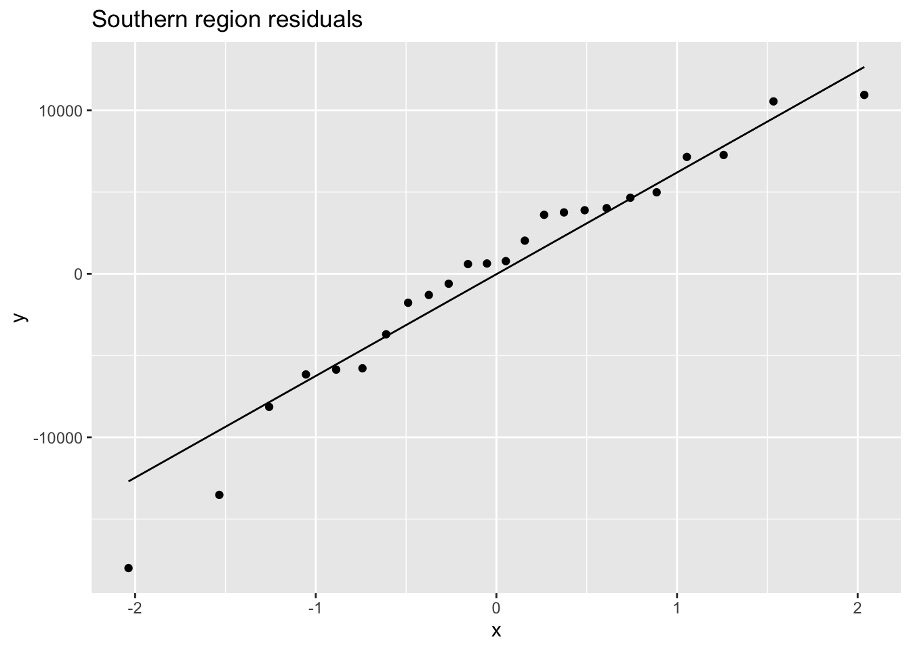

The Arctic Sea, once an area nearly impenetrable, has become a new playground for shipping and tourism alike. This is impart due to advances in ships and navigation allowing safer passage to areas once completely isolated. More importantly, and what this analysis is meant to reflect, is the effect climate change has had on ice extent which has allowed for more ships to voyage, more months out of the year throughout the arctic. It has been reported that between the years 2013 and 2019 the number of ships entering the Arctic Polar Code grew by 25%. (Arctic Council). In 2017, The Polar Code was enacted by the International Maritime Organization providing framework for safely navigating polar waters while adhering to environmental protocol. The region is under a time of immense change, and understanding ship traffic patterns is integral to assessing potential increased destruction to the area.
To frame my question I will primarily be using satellite collected data tracking unique ship observations in the Pacific Arctic sector which extends from the Aleutian Islands through Bering Sea and into the southern Chukchi and Beaufort Seas.
The data was collected monthly between January 1, 2015 and December 31, 2020. To calculate shipping intensity, they used an Automatic Identification System data collected from all ships over 300 gross tonnes on an international voyage, all cargo ships over 500 gross tonnes, and all passenger ships. They then converted the AIS data into a monthly hex data set which I downloaded as vector data. I chose to focus on the monthly sum of unique ships (both cargo and passenger) in the region.
Visualized Hex Data
Code
`2015-01`<-`2015-01`|>mutate_all(~replace(., is.na(.), 0))`2015-04`<-`2015-04`|>mutate_all(~replace(., is.na(.), 0))`2015-07`<-`2015-07`|>mutate_all(~replace(., is.na(.), 0))`2015-10`<-`2015-10`|>mutate_all(~replace(., is.na(.), 0))jan <-tm_shape(`2015-01`) +tm_polygons(col ="nMMSI_A",palette ="viridis",title ="Number of Unique Ships",breaks =c(0,1,100,200,300,400,500) ) +tm_layout(legend.outside =TRUE, title ="January 2015")apr <-tm_shape(`2015-04`) +tm_polygons(col ="nMMSI_A",palette ="viridis",title ="Number of Unique Ships",breaks =c(0,1,100,200,300,400,500) ) +tm_layout(legend.outside =TRUE, title ="April 2015")july <-tm_shape(`2015-07`) +tm_polygons(col ="nMMSI_A",palette ="viridis",title ="Number of Unique Ships",breaks =c(0,1,100,200,300,400,500) ) +tm_layout(legend.outside =TRUE, title ="July 2015")oct <-tm_shape(`2015-10`) +tm_polygons(col ="nMMSI_A",palette ="viridis",title ="Number of Unique Ships",breaks =c(0,1,100,200,300,400,500) ) +tm_layout(legend.outside =TRUE, title ="October 2015")
Climate Bulletin: Arctic Sea Ice Extent Anomalies
I also utilized sea ice anomaly data from Copernicus Climate Change data base which uses ECMWF’s (European Center for Medium Weather Forecasts) ERA-Interim reanalysis of observations. For the data I utilized the calculation for absolute sea ice area (SIA) anomaly in millions sq km.
My Analysis plan
1. Time Series Analysis
I wanted to look at the changes in ship traffic over time and how these may change given the part of region of the data set we were looking at. To do this I split my data up into north and south and ran decomposition to understand the underlying trends. I also ran this on the sea ice anomaly data (see appendix)
2. Regression Analysis
I wanted to understand what factors determine the number of ships sited in a given month. To do this I summed each hex value to determine the amount of vessels registered per month. I split these up to north and south and ran a linear regression with sea ice anomaly, year, and season (first or last half of the year) as my predicting variables.
I then combined the data sets and ran a linear regression which now included region (north or south) as a predictor of monthly ship numbers.
Then finally I included an interaction to see if the effect of the season depends on the region.
My Results
Decomposition
Code
all_years<-do.call(rbind, df_geom) |> tibble::rownames_to_column("Cycle") |>mutate(hexID =str_sub(Cycle, 9)) |>mutate(Cycle =str_sub(Cycle, 1, 7)) |>select(-hexID) |>pivot_wider(names_from ='Cycle',values_from ='nMMSI_A') |>mutate_all(~replace(., is.na(.), 0))south <- all_years |>slice(0:3500)north <- all_years |>slice(3501:6553)south <-st_drop_geometry(south)yearly_totals <-colSums(south, na.rm=T)traffic_ts_south <-ts(yearly_totals, frequency=4, start=c(2015,1))#plot.ts(traffic_ts_south)traffic_ts_south <-as_tsibble(traffic_ts_south)south_time <- traffic_ts_south %>%model(classical_decomposition(value, type ="additive") ) %>%components() %>%autoplot() +labs(title ="Decomposition of Ship Traffic in the Arctic: Bering sea from 2015-2021")north <-st_drop_geometry(north)yearly_totals <-colSums(north, na.rm=T)traffic_ts_north<-ts(yearly_totals, frequency=4, start=c(2015,1))#plot.ts(traffic_ts_north)traffic_ts_north <-as_tsibble(traffic_ts_north)north_time <- traffic_ts_north %>%model(classical_decomposition(value, type ="additive") ) %>%components() %>%autoplot() +labs(title ="Decomposition of Ship Traffic in the Arctic: Northern Bering and Southern Chukchi and Beaufort Seas from 2015-2021")
From these two figures you can see the difference ways seasonal and yearly trends play in the northern and southerns regions of our data set. The number of ships seen in the northern region, is much more dependent on the season than the southern. This makes sense, because the ice is much denser in the earlier half of the year. We can see from the visualization of our data, it is rare to see many ships travel far north in January and April. This also plays into the intuition why the yearly trend for the northern portion of the data is stronger too. As sea ice melts, the are where we will see more and more ship traffic will be the northern polar areas where it was once barricaded by ice.
To begin, I ran regression to predict monthly ship observations in the southern region of my dataset (see appendix) The only predictor that had a significant effect on amount of ships seen monthly in the southern region of our data set was year. The intercept was nonsensical but the model predicts that each year ship sightings grow by an estimated 1,492 ships.
I then ran regression to predict monthly ship observations in the northern region as you can see below.
Coefficients: Unlike the southern region, the northern region has more significant predictors. This makes sense from what we saw in our time series decomposition.
For each unit increase in ice extent (1 million sq km farther from the mean) the model predicts to see 2,346 more ships holding year fixed and season fixed.
For each year increase, holding extent and season fixed, ship sightings grow by an estimated 2,346.
And finally, the last half of the year adds a predicted increase of 15,338 ship sightings compared to the beginning half of the year holding fixed the year and ice extent.
Next I combined my southern and northern observations.
mod2 <-lm(Value ~ Season + Year + Region + Extent, data = all_anomaly_dat)mod2 %>%tbl_regression(intercept=TRUE) %>%as_gt() %>% gt::tab_source_note(gt::md("*Kelly Kapsar, Benjamin Sullender, and Aaron Poe. 2022. North Pacific and Arctic Marine Vessel Traffic Dataset (2015-2020); Hexagon Data.*"))
Characteristic
Beta
95% CI1
p-value
(Intercept)
-3,047,874
-5,432,428, -663,321
0.013
Season
First_Half
—
—
Last_half
8,136
3,589, 12,683
<0.001
Year
1,516
333, 2,698
0.013
Region
north
—
—
south
50,289
46,425, 54,153
<0.001
Extent
4,076
-1,115, 9,266
0.12
Kelly Kapsar, Benjamin Sullender, and Aaron Poe. 2022. North Pacific and Arctic Marine Vessel Traffic Dataset (2015-2020); Hexagon Data.
1 CI = Confidence Interval
Code
res <-resid(mod2)errors_2 <-ggplot(data = mod2, aes(sample = res)) +geom_qq() +geom_qq_line()
Interpretation :
Coefficients: For each year increase, holding region, and season fixed, ship sightings grow by an estimated 1,246.
The last half of the year adds a predicted increase of 6,245 ship sightings compared to the beginning half of the year holding fixed the year, region, and ice extent.
The southern region adds a predicted increase of 50,289 ship sighting compared to the northern region holding fixed the year, season, and ice extent.
From my decomposition, I could see the the effect of season was different for my different regions, so I ran an interaction on season and region for the total amount of monthly ships observed.
Understanding the effect season has on the each region
mod3 <-lm(Value ~ Region +Season + Region:Season, data = all_anomaly_dat)mod3 %>%tbl_regression(intercept=TRUE) %>%as_gt() %>% gt::tab_source_note(gt::md("*Kelly Kapsar, Benjamin Sullender, and Aaron Poe. 2022. North Pacific and Arctic Marine Vessel Traffic Dataset (2015-2020); Hexagon Data.*"))
Characteristic
Beta
95% CI1
p-value
(Intercept)
3,867
523, 7,212
0.024
Region
north
—
—
south
58,290
53,560, 63,020
<0.001
Season
First_Half
—
—
Last_half
14,255
9,525, 18,985
<0.001
Region * Season
south * Last_half
-16,002
-22,691, -9,312
<0.001
Kelly Kapsar, Benjamin Sullender, and Aaron Poe. 2022. North Pacific and Arctic Marine Vessel Traffic Dataset (2015-2020); Hexagon Data.
1 CI = Confidence Interval
Code
res <-resid(mod3)errors_3 <-ggplot(data = mod3, aes(sample = res)) +geom_qq() +geom_qq_line()
Interpretation :
Coefficients: The intercept: 3,867 ships is the predicted number of ship sightings in the northern region in the first half of the year.
58,290 is the difference in predicted ship sightings between the north and south.
14,255 is the predicted difference in ship sightings between the first and last half of the year.
From the interaction coefficient, if we wanted to determine the number of predicted ship sightings in the south in the last half of the year we would calculate :
mod4 <-lm(Value ~ Extent + Year + Region +Season + Region:Season, data = all_anomaly_dat)mod4 %>%tbl_regression(intercept=TRUE) %>%as_gt() %>% gt::tab_source_note(gt::md("*Kelly Kapsar, Benjamin Sullender, and Aaron Poe. 2022. North Pacific and Arctic Marine Vessel Traffic Dataset (2015-2020); Hexagon Data.*"))
Characteristic
Beta
95% CI1
p-value
(Intercept)
-3,051,875
-4,913,581, -1,190,169
0.002
Extent
4,076
23, 8,128
0.049
Year
1,516
593, 2,439
0.002
Region
north
—
—
south
58,290
54,023, 62,557
<0.001
Season
First_Half
—
—
Last_half
16,136
11,478, 20,795
<0.001
Region * Season
south * Last_half
-16,002
-22,036, -9,968
<0.001
Kelly Kapsar, Benjamin Sullender, and Aaron Poe. 2022. North Pacific and Arctic Marine Vessel Traffic Dataset (2015-2020); Hexagon Data.
1 CI = Confidence Interval
Code
res <-resid(mod4)errors_4 <-ggplot(data = mod4, aes(sample = res)) +geom_qq() +geom_qq_line()
Conclusions:
Based on my analysis, I feel confident concluding that arctic ship traffic in the northern region of my data set is undergoing significant change and is more vulnerable to the effects of sea ice decline than the southern portion. This makes sense as throughout the entirety of the year, you still see ship observations in the this region, and ship navigation is not determined by ice extent, as it is in the northern region.
Limitations:
My analysis relies on OLS, and therefore must meet the assumptions… Another limitation may come from interpreting my models. In order to conduct my analysis, I totaled ship observations in each area. Ship observations between hexagons naturally includes the same vessels. This means when one interprets the predicted values values of my model 58,290 ship observations in the south doesn’t mean 58,290 ships, but rather times a ship was seen, regardless of if it was already registered. Also, for my sea ice extent anomaly data I only had a holistic calculation for the entirety of the arctic, not the specific region my ship traffic focused on. For this I was assuming ice extent trends for the arctic where close enough to the actual numbers in my region, which could have affected the accuracy of my models.
Future Research: I think it would be interesting to dig deeper into the northern region and target which areas are seeing a large increase in ship observations. To do this it may be better to have ice extent data that applied to more specific regions.
AppendixSupporting Figures

Citation
BibTeX citation:
@online{giesie2022,
author = {Mallory Giesie},
title = {Analysis of {Changing} {Arctic} {Traffic}},
date = {10/24/2022},
url = {https://mallorygiesue.github.io/posts/arctic-traffic-analysis/},
langid = {en}
}
---title: "Analysis of Changing Arctic Traffic"description: ""author: - name: Mallory Giesie url: https://mallorygiesie.github.io/ orcid: 0000-0002-5300-3075 affiliation: Master of Environmental Data Science Program @ The Bren School (UCSB) affiliation-url: https://ucsb-meds.github.io/ date: 10-24-2022categories: [Statistics for the Environment, R, MEDS] citation: url: https://mallorygiesue.github.io/posts/arctic-traffic-analysis/ image: arctic.jpgdraft: false format: html: code-tools: true code-fold: true---```{r}#| include: falselibrary(sf)library(feasts)library(raster)library(tmap)library(tidyverse)library(raster)library(terra)library(dplyr)library(lubridate)library(plotly)library(ggplot2)library(gtsummary)rootdir <-"/Users/mallorygiesie/Desktop/MEDS/eds-222/final_project"```**How is Traffic in the Arctic Changing?***Introduction:*The Arctic Sea, once an area nearly impenetrable, has become a new playground for shipping and tourism alike. This is impart due to advances in ships and navigation allowing safer passage to areas once completely isolated. More importantly, and what this analysis is meant to reflect, is the effect climate change has had on ice extent which has allowed for more ships to voyage, more months out of the year throughout the arctic. It has been reported that between the years 2013 and 2019 the number of ships entering the Arctic Polar Code grew by 25%. (Arctic Council). In 2017, The Polar Code was enacted by the International Maritime Organization providing framework for safely navigating polar waters while adhering to environmental protocol. The region is under a time of immense change, and understanding ship traffic patterns is integral to assessing potential increased destruction to the area. **My Data**```{r}#| include: falsefiles <-dir("/Users/mallorygiesie/Desktop/MEDS/eds-222/final_project/ship_data",recursive =TRUE,full.names =TRUE,pattern ="\\.shp$" )as.list(files)# Function to read in all shape files and name them the month and year of when they were collectedread_in <-function(filepath) { date <-str_sub(filepath,-11,-5) file <-st_read(filepath) |>select(nMMSI_A)assign(date, file, envir =parent.frame())}# Reading through list of file paths and applying the function defined abovefor (i in files) {read_in(i)}df_geom <-Filter(function(x)is(x, "data.frame"), mget(ls()))```[**North Pacific and Arctic Marine Vessel Traffic Dataset (2015-2020); Hexagon Data**](https://arcticdata.io/catalog/view/doi:10.18739/A2XG9FC41)To frame my question I will primarily be using satellite collected data tracking unique ship observations in the Pacific Arctic sector which extends from the Aleutian Islands through Bering Sea and into the southern Chukchi and Beaufort Seas. The data was collected monthly between January 1, 2015 and December 31, 2020. To calculate shipping intensity, they used an Automatic Identification System data collected from all ships over 300 gross tonnes on an international voyage, all cargo ships over 500 gross tonnes, and all passenger ships. They then converted the AIS data into a monthly hex data set which I downloaded as vector data. I chose to focus on the monthly sum of unique ships (both cargo and passenger) in the region. **Visualized Hex Data**```{r}`2015-01`<-`2015-01`|>mutate_all(~replace(., is.na(.), 0))`2015-04`<-`2015-04`|>mutate_all(~replace(., is.na(.), 0))`2015-07`<-`2015-07`|>mutate_all(~replace(., is.na(.), 0))`2015-10`<-`2015-10`|>mutate_all(~replace(., is.na(.), 0))jan <-tm_shape(`2015-01`) +tm_polygons(col ="nMMSI_A",palette ="viridis",title ="Number of Unique Ships",breaks =c(0,1,100,200,300,400,500) ) +tm_layout(legend.outside =TRUE, title ="January 2015")apr <-tm_shape(`2015-04`) +tm_polygons(col ="nMMSI_A",palette ="viridis",title ="Number of Unique Ships",breaks =c(0,1,100,200,300,400,500) ) +tm_layout(legend.outside =TRUE, title ="April 2015")july <-tm_shape(`2015-07`) +tm_polygons(col ="nMMSI_A",palette ="viridis",title ="Number of Unique Ships",breaks =c(0,1,100,200,300,400,500) ) +tm_layout(legend.outside =TRUE, title ="July 2015")oct <-tm_shape(`2015-10`) +tm_polygons(col ="nMMSI_A",palette ="viridis",title ="Number of Unique Ships",breaks =c(0,1,100,200,300,400,500) ) +tm_layout(legend.outside =TRUE, title ="October 2015")```::: {layout-nrow=2}```{r}#| echo: false#| include: truejan``````{r}#| echo: false#| include: trueapr``````{r}#| echo: false#| include: truejuly``````{r}#| echo: false#| include: trueoct```:::**Climate Bulletin: Arctic Sea Ice Extent Anomalies**I also utilized sea ice anomaly data from [Copernicus Climate Change](https://climate.copernicus.eu/sea-ice) data base which uses ECMWF's (European Center for Medium Weather Forecasts) [ERA-Interim reanalysis](https://climate.copernicus.eu/climate-bulletin-about-data-and-analysis) of observations. For the data I utilized the calculation for absolute sea ice area (SIA) anomaly in millions sq km.**My Analysis plan***1. Time Series Analysis*I wanted to look at the changes in ship traffic over time and how these may change given the part of region of the data set we were looking at. To do this I split my data up into north and south and ran decomposition to understand the underlying trends. I also ran this on the sea ice anomaly data (see appendix)*2. Regression Analysis*I wanted to understand what factors determine the number of ships sited in a given month. To do this I summed each hex value to determine the amount of vessels registered per month. I split these up to north and south and ran a linear regression with sea ice anomaly, year, and season (first or last half of the year) as my predicting variables. I then combined the data sets and ran a linear regression which now included region (north or south) as a predictor of monthly ship numbers. Then finally I included an interaction to see if the effect of the season depends on the region. **My Results****Decomposition**```{r}all_years<-do.call(rbind, df_geom) |> tibble::rownames_to_column("Cycle") |>mutate(hexID =str_sub(Cycle, 9)) |>mutate(Cycle =str_sub(Cycle, 1, 7)) |>select(-hexID) |>pivot_wider(names_from ='Cycle',values_from ='nMMSI_A') |>mutate_all(~replace(., is.na(.), 0))south <- all_years |>slice(0:3500)north <- all_years |>slice(3501:6553)south <-st_drop_geometry(south)yearly_totals <-colSums(south, na.rm=T)traffic_ts_south <-ts(yearly_totals, frequency=4, start=c(2015,1))#plot.ts(traffic_ts_south)traffic_ts_south <-as_tsibble(traffic_ts_south)south_time <- traffic_ts_south %>%model(classical_decomposition(value, type ="additive") ) %>%components() %>%autoplot() +labs(title ="Decomposition of Ship Traffic in the Arctic: Bering sea from 2015-2021")north <-st_drop_geometry(north)yearly_totals <-colSums(north, na.rm=T)traffic_ts_north<-ts(yearly_totals, frequency=4, start=c(2015,1))#plot.ts(traffic_ts_north)traffic_ts_north <-as_tsibble(traffic_ts_north)north_time <- traffic_ts_north %>%model(classical_decomposition(value, type ="additive") ) %>%components() %>%autoplot() +labs(title ="Decomposition of Ship Traffic in the Arctic: Northern Bering and Southern Chukchi and Beaufort Seas from 2015-2021")``````{r}#| echo: false#| include: true#| warning: falsenorth_time``````{r}#| echo: false#| include: true#| warning: falsesouth_time```From these two figures you can see the difference ways seasonal and yearly trends play in the northern and southerns regions of our data set. The number of ships seen in the northern region, is much more dependent on the season than the southern. This makes sense, because the ice is much denser in the earlier half of the year. We can see from the visualization of our data, it is rare to see many ships travel far north in January and April. This also plays into the intuition why the yearly trend for the northern portion of the data is stronger too. As sea ice melts, the are where we will see more and more ship traffic will be the northern polar areas where it was once barricaded by ice. **Regression**```{r}july_anomaly <-read.csv(file.path(rootdir, "july_anomaly.csv")) |>slice(37:42) |> dplyr::select(Date, X.SIA.anomaly)oct_anomaly <-read.csv(file.path(rootdir, "oct_anomaly.csv")) |>slice(37:42) |> dplyr::select(Date, X.SIA.anomaly)january_anomaly <-read.csv(file.path(rootdir, "january_anomaly.csv")) |>slice(37:42) |> dplyr::select(Date, X.SIA.anomaly)april_anomaly <-read.csv(file.path(rootdir, "april_anomaly.csv")) |>slice(37:42) |> dplyr::select(Date, X.SIA.anomaly)anomaly_south <-rbind(july_anomaly,oct_anomaly,april_anomaly,january_anomaly) |>arrange(Date) |>cbind(traffic_ts_south) |> dplyr::select(-index) |> dplyr::rename(Extent = X.SIA.anomaly, Value = value) |>mutate(Date = lubridate::ym(Date)) |>mutate(Year = lubridate::year(Date), Month = lubridate::month(Date)) |>mutate(Month =as.factor(Month)) |>mutate(Season =ifelse(Month ==1| Month ==4, "First_Half", "Last_half")) |>mutate(Season =as.factor(Season))anomaly_north <-rbind(july_anomaly,oct_anomaly,april_anomaly,january_anomaly) |>arrange(Date) |>cbind(traffic_ts_north) |> dplyr::select(-index) |> dplyr::rename(Extent = X.SIA.anomaly, Value = value) |>mutate(Date = lubridate::ym(Date)) |>mutate(Year = lubridate::year(Date), Month = lubridate::month(Date)) |>mutate(Month =as.factor(Month)) |>mutate(Season =ifelse(Month ==1| Month ==4, "First_Half", "Last_half")) |>mutate(Season =as.factor(Season))```To begin, I ran regression to predict monthly ship observations in the southern region of my dataset (see appendix) The only predictor that had a significant effect on amount of ships seen monthly in the southern region of our data set was year. The intercept was nonsensical but the model predicts that each year ship sightings grow by an estimated 1,492 ships. I then ran regression to predict monthly ship observations in the northern region as you can see below. $$NorthernShipCount = \beta_0 + \beta_1 * Year_i + \beta_1 * Season_i + \beta_1 * Ice Extent + \epsilon_i$$```{r}mod1 <-lm(Value ~abs(Extent) + Year + Season, data = anomaly_north)mod1 %>%tbl_regression(intercept=TRUE) %>%as_gt() %>% gt::tab_source_note(gt::md("*Kelly Kapsar, Benjamin Sullender, and Aaron Poe. 2022. North Pacific and Arctic Marine Vessel Traffic Dataset (2015-2020); Hexagon Data.*"))```**Interpretation :****Coefficients:** Unlike the southern region, the northern region has more significant predictors. This makes sense from what we saw in our time series decomposition.For each unit increase in ice extent (1 million sq km farther from the mean) the model predicts to see 2,346 more ships holding year fixed and season fixed. For each year increase, holding extent and season fixed, ship sightings grow by an estimated 2,346.And finally, the last half of the year adds a predicted increase of 15,338 ship sightings compared to the beginning half of the year holding fixed the year and ice extent. Next I combined my southern and northern observations.```{r}anomaly_south <- anomaly_south |>mutate(Region ="south")anomaly_north <- anomaly_north |>mutate(Region ="north")all_anomaly_dat <-rbind(anomaly_south, anomaly_north) |>mutate(Region =as.factor(Region))```**Multiple Linear Regression (all predictors) without interactions**$$TotalShipCount = \beta_0 + \beta_1 * Year_i + \beta_1 * Season_i + \beta_1 * Ice Extent_i + \epsilon_i$$```{r}mod2 <-lm(Value ~ Season + Year + Region + Extent, data = all_anomaly_dat)mod2 %>%tbl_regression(intercept=TRUE) %>%as_gt() %>% gt::tab_source_note(gt::md("*Kelly Kapsar, Benjamin Sullender, and Aaron Poe. 2022. North Pacific and Arctic Marine Vessel Traffic Dataset (2015-2020); Hexagon Data.*"))```**Interpretation :****Coefficients:** For each year increase, holding region, and season fixed, ship sightings grow by an estimated 1,246.The last half of the year adds a predicted increase of 6,245 ship sightings compared to the beginning half of the year holding fixed the year, region, and ice extent. The southern region adds a predicted increase of 50,289 ship sighting compared to the northern region holding fixed the year, season, and ice extent. From my decomposition, I could see the the effect of season was different for my different regions, so I ran an interaction on season and region for the total amount of monthly ships observed. **Understanding the effect season has on the each region**$$TotalShipCount = \beta_0 + \beta_1 * Region_i + \beta_1 * Season_i +\beta_3 * Season_i * Region_i + \epsilon_i$$```{r}mod3 <-lm(Value ~ Region +Season + Region:Season, data = all_anomaly_dat)mod3 %>%tbl_regression(intercept=TRUE) %>%as_gt() %>% gt::tab_source_note(gt::md("*Kelly Kapsar, Benjamin Sullender, and Aaron Poe. 2022. North Pacific and Arctic Marine Vessel Traffic Dataset (2015-2020); Hexagon Data.*"))```**Interpretation :****Coefficients:** The intercept: 3,867 ships is the predicted number of ship sightings in the northern region in the first half of the year. 58,290 is the difference in predicted ship sightings between the north and south. 14,255 is the predicted difference in ship sightings between the first and last half of the year. From the interaction coefficient, if we wanted to determine the number of predicted ship sightings in the south in the last half of the year we would calculate :$$ShipSightings = 3,867 + 58,290 + 14,255 - 16,002$$$$ 60,410 $$Finally, I wanted to see the strength of the model with all of my predictors and the interaction between season and region. **Putting it all together**$$TotalShipCount = \beta_0 + \beta_1 * Year_i + \beta_1 * Season_i + \beta_1 * IceExtent_i + \beta_3 * Season_i * Region_i + \epsilon_i$$```{r}mod4 <-lm(Value ~ Extent + Year + Region +Season + Region:Season, data = all_anomaly_dat)mod4 %>%tbl_regression(intercept=TRUE) %>%as_gt() %>% gt::tab_source_note(gt::md("*Kelly Kapsar, Benjamin Sullender, and Aaron Poe. 2022. North Pacific and Arctic Marine Vessel Traffic Dataset (2015-2020); Hexagon Data.*"))```**Conclusions:**Based on my analysis, I feel confident concluding that arctic ship traffic in the northern region of my data set is undergoing significant change and is more vulnerable to the effects of sea ice decline than the southern portion. This makes sense as throughout the entirety of the year, you still see ship observations in the this region, and ship navigation is not determined by ice extent, as it is in the northern region. **Limitations:**My analysis relies on OLS, and therefore must meet the assumptions...Another limitation may come from interpreting my models. In order to conduct my analysis, I totaled ship observations in each area. Ship observations between hexagons naturally includes the same vessels. This means when one interprets the predicted values values of my model 58,290 ship observations in the south doesn't mean 58,290 ships, but rather times a ship was seen, regardless of if it was already registered. Also, for my sea ice extent anomaly data I only had a holistic calculation for the entirety of the arctic, not the specific region my ship traffic focused on. For this I was assuming ice extent trends for the arctic where close enough to the actual numbers in my region, which could have affected the accuracy of my models. **Future Research:**I think it would be interesting to dig deeper into the northern region and target which areas are seeing a large increase in ship observations. To do this it may be better to have ice extent data that applied to more specific regions. **Appendix****Supporting Figures**::: {layout-nrow=1}```{r}mod <-lm(Value ~ Year, data = anomaly_south)summary(mod)res <-resid(mod)```:::
![]()